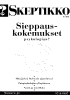
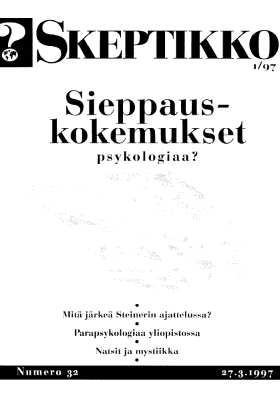
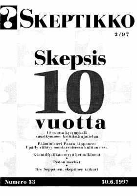
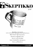
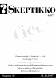
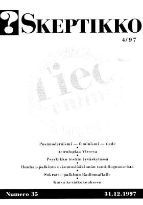

Skeptikko-lehti 1997
Ellei sinulla jo ole tietokoneellasi pdf-muodossa olevan tiedoston lukemiseen tarvittavaa
Acrobat Reader -ohjelmaa, saat sen ladattua maksutta tästä kuvakkeesta:

Skeptikko on Skepsis ry:n neljä kertaa vuodessa ilmestyvä jäsenlehti. Tästä verkkoversiosta löydät koko lehden sisällön PDF-muodossa ja pari artikkelia html-muotoisina.
  Skeptikko 32, 1/1997
- S. Albert Kivinen: Rudolf Steiner filosofina
- Toimitukselta
- Jukka Häkkinen: Epätavalliset tajunnantilat ja sieppauskokemukset
- Robert L. Morris: Koestlerin perintö, Parapsykologiaa Edinburgin yliopistossa
- Karlo Kauko: Natsien uskonkappaleet ja mystiikka
- Yhdistys toimii
- Raportti vuosikokouksesta
- Uusia kasvoja hallitukseen
- Bara Normal
- Lyhyet
- Carl Sagan in memorium
- Kirjat
- Keskustelua
- Tulevia tapahtumia
- English summary
 Skeptikko 33, 2/1997
 Skeptikko 34, 3/1997
- Leehna Krohn: Teoria ja fantasia
- Paholaisen asianajaja palaa
- Robert Brotherus: Bioenergiaa ennen ja nyt
- Bara Normal
- Yhdistys toimii
- Skepsikselle julkisuutta Jyväskylän kesässä
- Skepsis Jyväskylässä
- Skepsiksen haasteen säännöt
- Lyhyet
- Tulevia tapahtumia
- English summary
- Kutsu yhdistyksen ylimääräiseen kokoukseen
- Kutsu yhdistyksen syyskokoukseen
  Skeptikko 35, 4/1997
- Antti Kupiainen: Luonnontieteet ja postmodernismi
- Toimitukselta
- Gerhard Eggert: Bagdadin patterin arvoitus
- Suvi Viranta-Kovanen: Elämä – mitä ja missä?
- Yhdistys toimii
- Skepsis muutti sääntöjään
- Hallitus vaihtui
- Yhdistykselle oma nurkka Tieteiden talossa
- Juhlavuosi toi kosolti julkisuutta
- Huuhaa- ja Sokratespalkinnot julkistettiin
- Skepsis ry:n säännöt
- Psyykikkoa testattiin Jyväskylässä
- Bara Normal
- Enn Kasak: Astrologiasta kansanuskonto Virossa
- Skeptikkofeministit koolla Yhdysvalloissa
- Mikrosirua metsästämässä
- Kokouskutsu
- Lyhyesti
- Kirjat
- Tulevia tapahtumia
Kaikkien artikkelien © Copyright 1997 Skeptikko-lehti ja kirjoittaja.
Kirjoitukset vapaasti siteerattavissa ja levitettävissä ei-kaupallisiin tarkoituksiin, lähteeksi mainittava kirjoittajan lisäksi Skeptikko-lehti numeroineen.


{kind=link}
{kind=link}
{kind=link}
{kind=link}